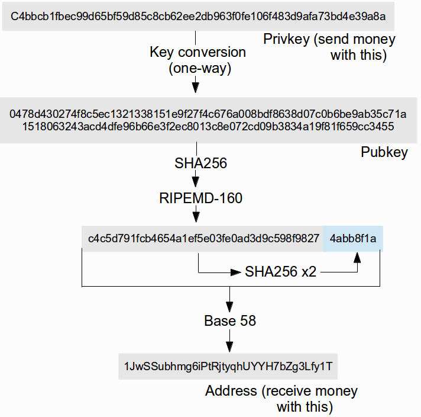

Одним из основных преимуществ Биткойна является то, как просто, легко и удобно работать с ним, с точки зрения разработчика. Биткойн не имеет ни сторонних зависимостей, ни проприетарных API, ни быстро меняющихся интерфейсов. Каков бы ни был ваш любимый язык программирования, есть неплохая вероятность того, что уже существует простая биткойн-библиотека, которая позволит вам начать отправку и получение биткойнов в течение нескольких часов. Цель этой статьи – представить некоторые из этих библиотек, и показать основы работы с биткойн-адресами и транзакциями на любом языке.
Адреса, Ключи, Транзакции, ого!
Биткойн-протокол можно разделить на три логические части: управление адресами и ключами, создание транзакций и добавление транзакций в блоки (майнинг). Аспекты майнинга для начинающего разработчика неактуальны и здесь не освещаются. Это отдельная специализированная область, которая быстро профессионализируется, а если вы заинтересованы в любительском майнинге – просто купите стандартное оборудование биткойн-шахтера. А вот адреса, ключи и транзакции – это то, с чем приходится иметь дело каждому, об этом-то мы и поговорим.
В плане управления биткойн-ключами, есть три типа объектов, с которыми вам придется иметь дело: секретные ключи, публичные ключи и адреса. Возможно, вы также видели термины «закрытый ключ» и «открытый ключ» в контексте криптографии с открытым ключом, так вот это то же самое. Биткойн использует не старые криптографические алгоритмы на основе разложения на множители (как RSA), а более новый вид криптографии, который называется эллиптическая криптография, поэтому биткойн-ключи немного отличаются от, скажем, PGP-ключей. Секретный ключ выглядит следующим образом:
9d86361789d13823fd888fa45c9b356b76d41a7e33b2b2c3056632721c4c1255
А соответствующий ему публичный:
04d8f08938e78447b2b1a629c503d5e17483b0d15751a9e8f83c8460e6ec32fd68d0b4068e83c012f54df995e52ed8bae38056a8d922f9687200ae83e5a6728dff
Секретный ключ может быть преобразован в публичный ключ, а вот публичный ключ не может быть преобразован в секретный. Биткойн-адрес на самом деле не публичный ключ, а его хэш. Так, биткойн-адрес, соответствующий приведенному выше публичному ключу будет: 172YRdGzPqyXm9rm1EWKwPXTRsmcApoPQ6

Схема перевода секретного ключа в соответствующий адрес
Как вы могли бы заметить, биткойн-адрес представлен не в шестнадцатеричном виде, как секретный и публичный ключи. Это потому, что для него Биткойн использует «сжатый» формат представления, известный как base58check. Base58 говорит о том, что в нем используются 58 различных букв и цифр (ноль, О, l и I опущены, так как их слишком легко перепутать друг с другом). Base58 – это число с основанием 58 — аналогично привычному для нас двоичному (основание 2), десятичному (основание 10) или шестнадцатеричному (основание 16) представлению. Например, десятичное число 31337 в двоичном виде будет ‘111101001101001’, в шестнадцатеричном — ‘7A69’, а в основании 58 это просто ‘AKJ’. Ну а суффикс check в описании формата означает, что к перед переводом числа в base58 к нему еще добавляется четырехбайтовая «чек-сумма». Все биткойн-библиотеки (о которых мы поговорим чуть позже) делают перевод в base58check автоматически, так что вам не придется это специально программировать.
Поговорим о транзакциях
Первое, что необходимо иметь в виду, это то, что в биткойне нет понятия «счетов» или «балансов», как в обычной бухгалтерии. Все средства хранятся в объектах, известных как «выходы транзакции». Каждая транзакция имеет один или несколько «входов», каждый из которых тратит неизрасходованный «выход» более ранней транзакции («UTXO=unspent transaction output»). Общее количество биткойнов во всех входах суммируется, и транзакция может затем распределить эту сумму на любое количество своих собственных «выходов». Вот как типичная транзакция выглядит в json формате:
{ "locktime": 0,
"ins": [
{ "script": "",
"outpoint": {
"index": 0,
"hash": "319ba90f1645eed46a8fd48e9754ca979c3371f59099d32634a8b56549ce02aa"
},
"sequence": 4294967295
}
],
"outs": [
{ "value": 1000000,
"script": "76a914a41d15ae657ad3bfd0846771a34d7584c37d54a288ac"
},
{ "value": 344164,
"script": "76a914c4c5d791fcb4654a1ef5e03fe0ad3d9c598f982788ac"
}
],
"version": 1
}
А если это затем сериализовать, мы получим:
0100000001aa02ce4965b5a83426d39990f571339c97ca54978ed48f6ad4ee45 160fa99b310000000000ffffffff0230750000000000001976a914a41d15ae65 7ad3bfd0846771a34d7584c37d54a288ac204e0000000000001976a914c4c5d7 91fcb4654a1ef5e03fe0ad3d9c598f982788ac00000000
Параметр каждого выхода «script» это чаще всего просто способ представления адреса получателя. Преобразовав два выходных скрипта указанной транзакции в адреса, мы получим «1FxkfJQLJTXpW6QmxGT6oF43ZH959ns8Cq» и «1JwSSubhmg6iPtRjtyqhUYYH7bZg3Lfy1T» соответственно. Единственный вход в этой транзакции является ссылкой на выход предыдущей транзакции (хэш-код транзакции и индекс выхода в ней). Посмотрев на blockchain.info, мы видим, что выход 0 транзакции с хэш-кодом 319ba90f… имеет 1354164 сатоши (наименьшая стомиллионная доля биткойна), которые можно потратить. Два выхода транзакции тратят в сумме 1344164. Куда же деваются еще 10000 сатоши? Они оставлены в качестве оплаты за транзакцию майнеру, который включит эту транзакцию в блок.
Как вы уже догадались, транзакция может потратить только весь вход полностью, а не частично. Чтобы обойти эту проблему, вводится понятие «сдачи» — один из выходов отправляется получателю, а вот второй – возвращает «сдачу» с потраченного входа на свой собственный адрес. В нашем примере транзакции, первый выход – это 0.01 BTC оплаты, а второй выход — сдача. После создания транзакции, вам нужно подписать каждый вход секретным ключом, который соответствует этому адресу. Этот процесс для эллиптической криптографии не так уж и тривиален – но библиотеки-то нам на что? Они все за нас сделают, только дай правильный секретный ключ. Вот как эта наша транзакция выглядит, когда ее подписали:
0100000001aa02ce4965b5a83426d39990f571339c97ca54978ed48f6ad4ee45 160fa99b31000000008b48304502203bcabb367ca84b2af394597bff4a6169fa 55b156708557256d2c584f1bd54e1502210086fdf257e58dbb5e1f3b4686f438 5e86ea89e677a6c90a3c87ce276d88ad2b31014104e6eb4c73192bcc7b63f7e3 c05ed52c0d98abac6f6aa0876e2e57eeda6b60fe03098cb63633d08077b14cc3 0efe9bc5c9866ebc1297c03399e27381539025f887ffffffff0240420f000000 00001976a914a41d15ae657ad3bfd0846771a34d7584c37d54a288ac64400500 000000001976a914c4c5d791fcb4654a1ef5e03fe0ad3d9c598f982788ac0000
Теперь, наконец, мы можем послать подготовленную транзакцию в сеть, где ее подхватят и включат в блокчейн майнеры. Самый лучший способ сделать это программно – через интерфейс на blockchain.info/pushtx. И это, в общем-то, все – конец теории, вы теперь эксперт в биткойн-транзакциях! Ну, во всяком случае, это вполне рабочий минимум знаний, пока мы не стали рассуждать о платежных скриптах, схемах с арбитражем или с залогом и прочих продвинутых прелестях биткойн-транзакций. Но все это лучше оставить для другой статьи.
Bitcoind
Bitcoind является «эталонным клиентом», созданным основной командой биткойн-разработчиков. Это полноценный биткойн-узел, который загружает всю историю транзакций (blockchain) и обрабатывает транзакции. Bitcoind несколько ограничен по функциональности, например, он не может выдать вам историю транзакций по адресу, который вы не импортировали заранее. Тем не менее, он предоставляет достаточно мощный интерфейс для программиста. После загрузки Bitcoind и его инсталляции/сборки, первым шагом является создание файла конфигурации в папке Биткойна ( ~/.bitcoin – ведь вы на Линуксе, верно?) со следующим содержанием:
Понятно, что стоит заменить user/pass на собственное имя пользователя и пароль. Как только вы сделаете это, перейдите в каталог, содержащий исполняемый файл (/bin если вы инсталлировали готовую сборку, или куда вы там его сами собрали) и запустите демон:
> ./bitcoind --daemon
Теперь, у вас есть два пути взаимодействия с демоном bitcoind, чтобы заставить его выполнять ваши команды. Первый способ попроще: в командной строке, вводите «bitcoind» с указанием имени команды и аргументов. Например:
> ./bitcoind getblockhash 1
00000000839a8e6886ab5951d76f411475428afc90947ee320161bbf18eb6048
> ./bitcoind getblock 00000000839a8e6886ab5951d76f411475428afc90947ee320161bbf18eb6048
{ "hash" : "00000000839a8e6886ab5951d76f411475428afc90947ee320161bbf18eb6048",
"confirmations" : 212362,
"size" : 215,
"height" : 1,
"version" : 1,
"merkleroot" : "0e3e2357e806b6cdb1f70b54c3a3a17b6714ee1f0e68bebb44a74b1efd512098",
"tx" : [ "0e3e2357e806b6cdb1f70b54c3a3a17b6714ee1f0e68bebb44a74b1efd512098" ],
"time" : 1231469665,
"nonce" : 2573394689,
"bits" : "1d00ffff",
"difficulty" : 1.00000000,
"previousblockhash" : "000000000019d6689c085ae165831e934ff763ae46a2a6c172b3f1b60a8ce26f",
"nextblockhash" : "000000006a625f06636b8bb6ac7b960a8d03705d1ace08b1a19da3fdcc99ddbd"
}
> ./bitcoind getrawtransaction 0e3e2357e806b6cdb1f70b54c3a3a17b6714ee1f0e68bebb44a74b1efd512098
01000000010000000000000000000000000000000000000000000000000000000000000000ffffffff0704ffff001d0104ffffffff0100f2052a0100000043410496b538e853519c726a2c91e61ec11600ae1390813a627c66fb8be7947be63c52da7589379515d4e0a604f8141781e62294721166bf621e73a82cbf2342c858eeac00000000
Второй способ использует JSON-RPC. Это общий интерфейс, который позволяет подключаться к bitcoind и выполнять команды из любого языка – а возможно, даже с другого компьютера. В Wiki Биткойна есть страница с подробным описанием некоторых способов сделать JSON-RPC-вызов в различных языках программирования. Для краткости я приведу только два.
В Pythone:
import httplib, json, base64
def mkrequest(url,user,pass,method,params,hasresponse=True):
connection = httplib.HTTPConnection(url)
postdata = json.dumps({ "method": method, "params": params })
req = urllib2.Request('http://localhost:8001',postdata, {
'Authorization': b'Basic '+base64.b64encode(user+':'+pass),
})
if hasresponse: return urllib2.urlopen(req).read().strip()
А вот так это можно сделать в командной строке с помощью curl:
curl --user <user> --pass <pass> --data-binary '{"method": <method>, "params": [<param1>,<param2>...] }' http://localhsot:8332
SX
Есть два альтернативных инструмента командной строки для работы с биткойн-транзакциями: pyBitcointools и SX. SX был создан Амиром Тааки, pyBitcointools написал Виталик Бутерин. Синтаксис очень похож, хотя есть и отличия. Установка SX является относительно простым делом — все, что вам нужно сделать, это загрузить скрипт install-sx.sh, установить пару библиотек, и запустить этот скрипт. В Ubuntu, скажем, последовательность команд выглядит следующим образом:
wget http://sx.dyne.org/install-sx.sh
sudo apt-get install git build-essential autoconf libtool libboost-all-dev pkg-config libcurl4-openssl-dev libleveldb-dev libzmq-dev libconfig++-dev libncurses5-dev qrencode
chmod +x install-sx.sh
./install-sx.sh
После установки SX вы с ним можете много чего сделать. Скажем, если вы просто создаете платформу для обработки платежей, вам достаточно загрузить историю по какому-то адресу и, возможно, посмотреть подробно его транзакции:
> sx history 114tTpMrJHJpNvkPZmz8KVcJoQjD5Utosd
Address: 114tTpMrJHJpNvkPZmz8KVcJoQjD5Utosd
output: eb84dd62287a1d85e3f31b0de869534a8f800fad559e36f779a45470aa4e8976:0
output_height: 277978
value: 100000
spend: 3216bc4b8294532cddab1ae2a95a336ee841be02e6246c1ad9cf1e7db788d10e:0
spend_height: 277979
Address: 114tTpMrJHJpNvkPZmz8KVcJoQjD5Utosd
output: 5a45c86c5aff8200db4c7f8a91b9a3e51932510cbeb2dc173fc8611bee5aeaaf:1
output_height: 278076
value: 70000
spend: 4817f863ace4337be7ea95476b2c73723fb83fbe0e1a6236fbf30f2a8aa14dee:0 spend_height: 278076
> sx fetch-transaction 516f0bfe2ed3703112434f645fdc7d805bba51c94c9d8f88b666f1c832eb423c
010000000142f2e85e078a214d5c61b58276da5cec01311e026355c570b650c2e665585011010000008a47304402203aa40adefd0dc4a3f960b230a9e1b284d78a4b4dec9119368fdeb006af3b6c7b022071165df64ea4502003d8b6e9c46c28b5c5c748226737b4fe1ee8fc4269b50ee5014104a70f7c8b0a835f549f061b725bd3e06744963a07cb2f76097bafe040f939d6e6d23c6cc89e5b50aa944d26b7d1c8a1f3b8b4e6f7c2f54cf35fb46b0e4b9442e1ffffffff02a0860100000000001976a914ba55b9859c7356c5e5549c8a30c463e3db64e84488ac80054800000000001976a9145a35a4558b8a0140f4a73aaac0be891b99e3790e88ac00000000
Если вы хотите вычислить баланс адреса, вы должны получить всю его историю (ключ –j даст вам результат в легко разбираемом JSON -формате), отфильтровать те входы, которые уже были потрачены, и суммировать значения остальных. Это даст вам общее количество сатоши на данном адресе, которые можно потратить (напоминаю, 100 миллионов сатоши = 1 BTC). Если же вы хотите подробно разобрать транзакцию, скопируйте ее в файл и запустите:
> sx showtx имя_файла
Вы также можете работать с секретными ключами и адресами:
> sx newkey > priv1
> cat priv1
5JRLqUG1FwSimZwSzNLPG1BKCENCRhDwkVveL59AEqt97bbkCD1
> cat priv1 | sx pubkey
04bfc8181cd833567e078cb03ec44034c226bf23dbb2482db53513e0fcea205c40bd6dc73db0c33296d8fa8e0bd347099e07787e17a2a40293004efdb512ff51e2
> cat priv1 | sx addr
1B772AGqphjSQqqeecdTBmnBdgMBPYDXt7
Ну, и можно совершать транзакции. Здесь мы используем выход
819171fa2eaa33fc684c800ae2ce34cff8400d4d966e995c6a2f0e970b6f703d:0
чтобы отправить 90000 сатоши на адрес 18qk7SqRHuS4Kf3f6dmsvqqv7iw1xy77Z6:
> sx mktx txfile.tx -i 819171fa2eaa33fc684c800ae2ce34cff8400d4d966e995c6a2f0e970b6f703d:0 -o 18qk7SqRHuS4Kf3f6dmsvqqv7iw1xy77Z6:90000
> cat txfile.tx
01000000013d706f0b970e2f6a5c996e964d0d40f8cf34cee20a804c68fc33aa2efa7191810000000000ffffffff01905f0100000000001976a9145600d581a94f65067a09103609e919e3c01141ed88ac00000000
> sx rawscript dup hash160 [ `echo 1B772AGqphjSQqqeecdTBmnBdgMBPYDXt7 | sx decode-addr` ] equalverify checksig > raw.script
> cat raw.script
76a9146ed8c762b24ba024df09cb323ea525b06da3acb788ac
> echo 5JRLqUG1FwSimZwSzNLPG1BKCENCRhDwkVveL59AEqt97bbkCD1 | sx sign-input txfile.tx 0 `cat raw.script` > sig
> cat sig
3044022069f05eacfe93fc6c028bd078228d7807af07c5ed7566491c709b181950d735830220788e089c63512c07239b94740a36de724b54c076192dbd27584b5b729986420d01
> sx rawscript [ `cat sig` ] [ 04bfc8181cd833567e078cb03ec44034c226bf23dbb2482db53513e0fcea205c40bd6dc73db0c33296d8fa8e0bd347099e07787e17a2a40293004efdb512ff51e2 ] | sx set-input txfile.tx 0 > txfile2.tx
> cat txfile2.tx
01000000013d706f0b970e2f6a5c996e964d0d40f8cf34cee20a804c68fc33aa2efa719181000000008a473044022069f05eacfe93fc6c028bd078228d7807af07c5ed7566491c709b181950d735830220788e089c63512c07239b94740a36de724b54c076192dbd27584b5b729986420d014104bfc8181cd833567e078cb03ec44034c226bf23dbb2482db53513e0fcea205c40bd6dc73db0c33296d8fa8e0bd347099e07787e17a2a40293004efdb512ff51e2ffffffff01905f0100000000001976a9145600d581a94f65067a09103609e919e3c01141ed88ac00000000
> sx broadcast-tx txfile2.tx
Можно также проверить правильность транзакции:
> sx validtx txfile2.tx
Status: Validation of inputs failed
Unconfirmed: 0
Ошибка имеет смысл, поскольку выходы, которые я здесь использовал, были уже потрачены. По существу, SX позволяет вам быстро сделать кастомный биткойн-клиент: вы можете выбирать непотраченные выходы по вашим адресам и вручную собирать транзакции. Предупреждение: не работайте сразу с крупными суммами – ведь это же живые деньги! Пока вы не разобрались в создании транзакций основательно, запросто можно случайно опустить ноль в числе на выходе транзакции. Это низкоуровневая система, она не отловит вашу ошибку, и в итоге вы заплатите комиссию в 90% от транзакции, вовсе того не желая. Ну, или потренируйтесь на testnete, для начала.
PyBitcointools
PyBitcointools – это «два в одном»: Python-библиотека, которая позволяет манипулировать биткойн-адресами, ключами и транзакциями, и инструмент командной строки, похожий на sx. Для установки скачайте pyBitcointools здесь github.com/vbuterin/pybitcointools, перейдите в его каталог, и запустите:
> sudo python setup.py install
Далее, чтобы импортировать все команды pyBitcointools, откройте консоль Python и введите:
>>> from pyBitcointools import *
Начнем с управления ключами:
> priv = sha256('some big long brainwallet password')
> priv
'57c617d9b4e1f7af6ec97ca2ff57e94a28279a7eedd4d12a99fa11170e94f5a4'
> pub = privtopub(priv)
> pub
'0420f34c2786b4bae593e22596631b025f3ff46e200fc1d4b52ef49bbdc2ed00b26c584b7e32523fb01be2294a1f8a5eb0cf71a203cc034ced46ea92a8df16c6e9'
> addr = pubtoaddr(pub)
> addr
'1CQLd3bhw4EzaURHbKCwM5YZbUQfA4ReY6'
Но, как упоминалось выше, pyBitcointools также включает pybtctool, подобный SX инструмент командной строки. Для использования pybtctool, выполните:
> pybtctool sha256 "some big long brainwallet password" 57c617d9b4e1f7af6ec97ca2ff57e94a28279a7eedd4d12a99fa11170e94f5a4
> pybtctool privtopub 57c617d9b4e1f7af6ec97ca2ff57e94a28279a7eedd4d12a99fa11170e94f5a4 0420f34c2786b4bae593e22596631b025f3ff46e200fc1d4b52ef49bbdc2ed00b26c584b7e32523fb01be2294a1f8a5eb0cf71a203cc034ced46ea92a8df16c6e9
> pybtctool pubtoaddr 0420f34c2786b4bae593e22596631b025f3ff46e200fc1d4b52ef49bbdc2ed00b26c584b7e32523fb01be2294a1f8a5eb0cf71a203cc034ced46ea92a8df16c6e9 1CQLd3bhw4EzaURHbKCwM5YZbUQfA4ReY6
Теперь история и выборка транзакций:
> h = history(addr)
> h
[{'output': u'97f7c7d8ac85e40c255f8a763b6cd9a68f3a94d2e93e8bfa08f977b92e55465e:0', 'value': 50000, 'address': u'1CQLd3bhw4EzaURHbKCwM5YZbUQfA4ReY6'}, {'output': u'4cc806bb04f730c445c60b3e0f4f44b54769a1c196ca37d8d4002135e4abd171:1', 'value': 50000, 'address': u'1CQLd3bhw4EzaURHbKCwM5YZbUQfA4ReY6'}]
> fetchtx('97f7c7d8ac85e40c255f8a763b6cd9a68f3a94d2e93e8bfa08f977b92e55465e') '0100000002b8497b5d250420d0e0ef55150ae49f451846791f54b858e4d7b50e23c087b560010000008c493046022100a49c01bbf7a6200b05c61072f79fbbcbb56182e0082f85734ff501efd8f2180a022100a6d2b19a1023c4197206b1ea0d58165fa4d6170e7823d90d1cdb0f2704ceb5d0014104ba8b7ec1189b046d0f6dc68d2cafa4bfc30ea34b8f52a0f815550ffd5f5dfe12df06f2c9a3c1b206b833fe274601fe19e0afd9c47e251ba247edfa7a0237ab3affffffff71d1abe4352100d4d837ca96c1a16947b5444f0f3e0bc645c430f704bb06c84c000000008c493046022100c7309b13e54896533ebb6c369b1f46992ed7f8d96c8eb606cfd66a06bf6a061d022100e1cb8d32b380dac42584a5e1a6ff00c209767471b8bb82a13bf8d36221a39aa9014104a88f9a448cfcf259df1da679a37dd8e4c148cb6f0ba6a9b1e7d7019b09ef1034495f02d4cdf27d2bab41da3bce3f9508b20f6ad265b5940799610b69a12d02a5ffffffff0250c30000000000001976a9147d13547544ecc1f28eda0c0766ef4eb214de104588ac953d0800000000001976a9145fe616df99d43ae8001ca941f381572cd1cb74b388ac00000000'
Обратите внимание, что pybtctool имеет опцию –s, которую можно использовать создания цепочки операций:
> pybtctool sha256 'some big long brainwallet password' | pybtctool -s privtoaddr | pybtctool -s history
[{'output': u'97f7c7d8ac85e40c255f8a763b6cd9a68f3a94d2e93e8bfa08f977b92e55465e:0', 'value': 50000, 'address': u'1CQLd3bhw4EzaURHbKCwM5YZbUQfA4ReY6'}, {'output': u'4cc806bb04f730c445c60b3e0f4f44b54769a1c196ca37d8d4002135e4abd171:1', 'value': 50000, 'address': u'1CQLd3bhw4EzaURHbKCwM5YZbUQfA4ReY6'}]
> pybtctool fetchtx 97f7c7d8ac85e40c255f8a763b6cd9a68f3a94d2e93e8bfa08f977b92e55465e | pybtctool -s deserialize
{"locktime": 0, "outs": [{"value": 50000, "script": "76a9147d13547544ecc1f28eda0c0766ef4eb214de104588ac"}, {"value": 540053, "script": "76a9145fe616df99d43ae8001ca941f381572cd1cb74b388ac"}], "version": 1, "ins": [{"script": "493046022100a49c01bbf7a6200b05c61072f79fbbcbb56182e0082f85734ff501efd8f2180a022100a6d2b19a1023c4197206b1ea0d58165fa4d6170e7823d90d1cdb0f2704ceb5d0014104ba8b7ec1189b046d0f6dc68d2cafa4bfc30ea34b8f52a0f815550ffd5f5dfe12df06f2c9a3c1b206b833fe274601fe19e0afd9c47e251ba247edfa7a0237ab3a", "outpoint": {"index": 1, "hash": "60b587c0230eb5d7e458b8541f794618459fe40a1555efe0d02004255d7b49b8"}, "sequence": 4294967295}, {"script": "493046022100c7309b13e54896533ebb6c369b1f46992ed7f8d96c8eb606cfd66a06bf6a061d022100e1cb8d32b380dac42584a5e1a6ff00c209767471b8bb82a13bf8d36221a39aa9014104a88f9a448cfcf259df1da679a37dd8e4c148cb6f0ba6a9b1e7d7019b09ef1034495f02d4cdf27d2bab41da3bce3f9508b20f6ad265b5940799610b69a12d02a5", "outpoint": {"index": 0, "hash": "4cc806bb04f730c445c60b3e0f4f44b54769a1c196ca37d8d4002135e4abd171"}, "sequence": 4294967295}]}
Ну и, конечно же, вы можете совершать транзакции:
> pybtctool mktx 97f7c7d8ac85e40c255f8a763b6cd9a68f3a94d2e93e8bfa08f977b92e55465e:0 4cc806bb04f730c445c60b3e0f4f44b54769a1c196ca37d8d4002135e4abd171:1 16iw1MQ1sy1DtRPYw3ao1bCamoyBJtRB4t:90000 | pybtctool -s sign 0 57c617d9b4e1f7af6ec97ca2ff57e94a28279a7eedd4d12a99fa11170e94f5a4
01000000025e46552eb977f908fa8b3ee9d2943a8fa6d96c3b768a5f250ce485acd8c7f797000000008b483045022100dd29d89a28451febb990fb1dafa21245b105140083ced315ebcdea187572b3990220713f2e554f384d29d7abfedf39f0eb92afba0ef46f374e49d43a728a0ff6046e01410420f34c2786b4bae593e22596631b025f3ff46e200fc1d4b52ef49bbdc2ed00b26c584b7e32523fb01be2294a1f8a5eb0cf71a203cc034ced46ea92a8df16c6e9ffffffff71d1abe4352100d4d837ca96c1a16947b5444f0f3e0bc645c430f704bb06c84c0100000000ffffffff01905f0100000000001976a9143ec6c3ed8dfc3ceabcc1cbdb0c5aef4e2d02873c88ac00000000
Затем вы можете послать транзакцию в сеть с помощью pushtx или eligius_pushtx чтобы послать прямиком на этот пул. Команда eligius_pushtx полезна для «нестандартных» транзакций которые обычные биткойн-ноды отвергают, но пул Eligius относится к ним лояльно. Например, транзакции с несколькими подписями или с несколькими сторонами транзакции будут приняты здесь, но мало где еще.
Библиотеки
PyBitcointools и SX не единственные доступные инструменты, биткойн-библиотеки есть почти для каждого языка. Вот лишь некоторые из них:
• BitcoinJS (Javascript): оригинал, или форк
• python-ecdsa (Python)
• bitcoin-ruby (Ruby)
• Haskoin (Haskell)
• libBitcoin (C++)
• BitcoinJ (Java)
• btcd (Go)
Занимайтесь биткойн-программированием в свое удовольствие!